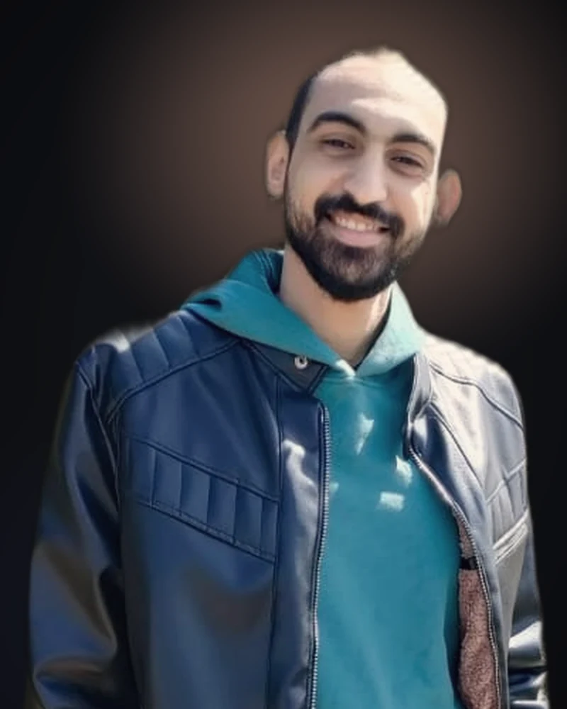

AG نبذة عني
أحمد علي غالي.
مطور ويب ومصمم UI/UX — عجمان، الإمارات
أنا مطور ويب ومصمم UI/UX، مقيم في عجمان، الإمارات. بصمم التجربة، وبعدين بنفذها بنفسي — من فيجما لووردبريس، إليمنتور برو، أو رياكت — عشان مفيش حاجة تضيع بين المصمم والمطور.
طريقة شغلي ثابتة في كل المشاريع: أفهم المنتج محتاج يعمل إيه، أصمم النظام اللي بيحققه، أبنيه بحيث يشتغل كويس على موبايل حقيقي وعلى نت حقيقي، وبعدين أصقله على أساس اللي الناس بتعمله فعلًا بعد الإطلاق.

FIG. 01 — AG / 202601 تفكير الأنظمة
برا شغل العملاء، نفس عادة التفكير.
الشطرنج، الكورة، الطاولة — زي رخامة القهوة بعد الضهر، حاجات الموضع فيها أهم من القوة الخام، واللي النقلة الحالية فيها مش هي بيت القصيد فعلًا.
الشطرنج
زي اللي بتشوفه وسط البلد واقف نص ساعة قدّام الرقعة — كل نقلة هي مقايضة بتتاخد دلوقتي عشان موضع هيحصل بعد نقلتين أو تلاتة. نفس الانضباط اللي محتاجه أي تدفق دفع — نادرًا ما تكون بتحل مشكلة النهارده بمعزل عن اللي جاي.
الكورة
زي ماتش في الحتة: لو كل واحد بيلعب لوحده، مش هيبقى فريق. الفريق بيشتغل كويس بس لما حداشر وظيفة منفصلة بتقرا نفس النظام في نفس اللحظة. ده تصميم تنظيمي، زي أي منتج فيه أكتر من مساهم واحد.
الطاولة
زي القهاوي بعد الغدا — الزهر بيضيف حظ، بس اللوح بيكافئ اللي بيقرا الاحتمالات صح على المدى الطويل. السوفتوير ليه نسخته من المدخلات العشوائية والاستجابة المنضبطة.
02 الأدوات
مش كل حاجة بنفس الوزن.
القايمة الكاملة أطول من كده بكتير. دي الأدوات اللي بتظهر في كل مشروع تقريبًا.
UI/UX والتصميم
- فيجما
- وايرفريمز وتدفقات المستخدم
- برايتوتايب
- أنظمة تصميم
- تصميم موبايل-أول
ووردبريس والويب
- ووردبريس
- إليمنتور برو
- تطوير قوالب مخصصة
- PHP
- ACF
فرونت إند وفُل-ستاك
- React / React Native
- TypeScript
- Node.js
- Supabase
الأداء والأدوات
- Core Web Vitals
- GA4 وTag Manager
- Git / GitHub
- n8n
حاليًا بقسّم وقتي بين بناء مواقع ووردبريس للعيادات والمشاريع الصغيرة، وتوثيق UX لمنصة سيارات كبيرة باللغة العربية — جمهورين مختلفين جدًا، بيخلوني دايمًا صريح مع نفسي عن مين فعلًا بصمم له.
03 الفلسفة
التصميم والتنفيذ مش شغلانتين منفصلتين.
"التصميم اللي موجود في فيجما بس، لسه ما قابلش قيوده الحقيقية. أفضّل أعرف بدري إن الشكل هيعيش على موبايل حقيقي، ونت بطيء، ومحتوى حقيقي — لأن دي هي النسخة اللي الناس فعلًا هتستخدمها."